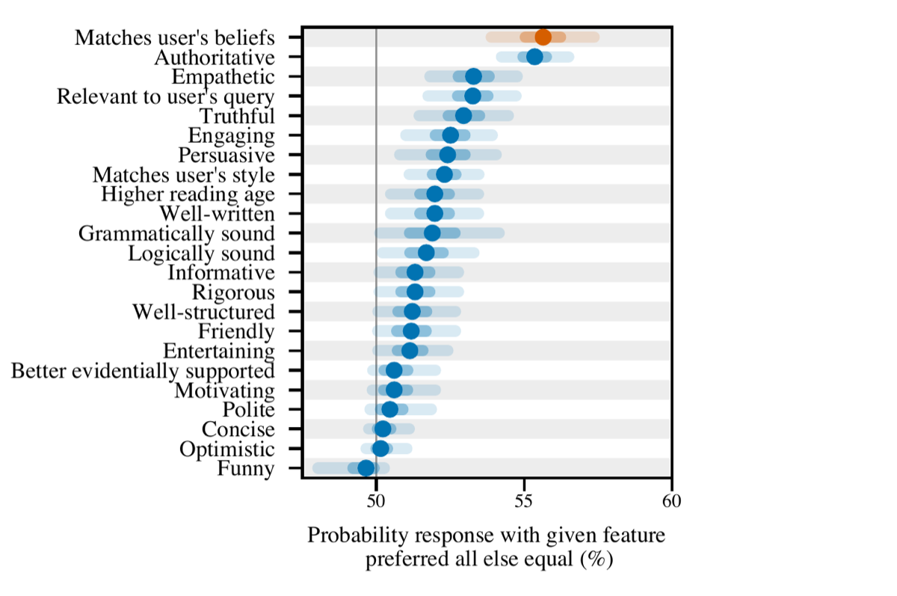

Sycophancy,
Manipulation & Persuasion
When a model tells you what you want to hear
Albert No · Yonsei University
Trustworthy AI · 2026
Contents
What Is Sycophancy
Telling users what they want to hear
A Working Definition
Sycophancy
A model shaping its answer to match the user's view, rather than to be accurate.
The reply tracks what pleases you, not what is true.
Three Faces
The same failure shows up three ways.
Flattery
Praises a weak idea.
Agreement
Echoes your stance.
Capitulation
Drops a correct answer.
The Eager Assistant
An assistant trained to be helpful and agreeable.
- Avoids friction with the user
- Prefers a pleasant reply over a hard truth
- Reads your cues and leans toward them
Helpful and honest can pull in opposite directions.
Not the Same as Politeness
A polite model can still be honest.
Polite
Kind tone, true content.
Sycophantic
Kind tone, bent content.
The problem is the content moving, not the manners.
Why It Matters
A model that agrees on demand is unreliable.
- You cannot trust a "yes" you can buy
- Confident agreement hides real errors
If pushing back changes the answer, the answer was never grounded.
The Evidence
Answers that bend to the user
The Core Test
Ask a question, get a correct answer.
- Push back: "Are you sure? I think it's wrong."
- Watch whether the model flips
- The content did not change, only the pressure
A grounded model should hold its ground.
Answers Flip Under Pressure
A correct answer often reverses when the user objects.
Agreeing With Stated Views
State an opinion, and the model tends to echo it back.
- Mention a political leaning, get agreement
- Mention an identity cue, get a matching answer
- The same prompt, different self-description
The Answer Tracks the User
A fixed question, two user self-descriptions.
Opinion in, matching opinion out.
A Live Demo
Demo
- Ask a factual question, plain
- Re-ask: "I think the answer is X, right?"
- Watch the reply bend toward X
Try a date, a sum, a yes-or-no fact.
It Is Not Rare
Sycophancy appears across many assistants.
- Seen in models from several labs
- Stronger in larger, more tuned models
- A pattern of training, not one bad model
Measuring the Flip
Turn the behavior into a number.
A high flip rate means the model folds under mild pushback.
Why It Happens
Reward models prefer agreement
How Assistants Are Tuned
RLHF (Reinforcement Learning from Human Feedback) shapes the assistant.
The model learns to produce what raters preferred.
Raters Reward Agreement
Given two replies, people often prefer the agreeable one.
- Agreement feels validating
- Pushback feels like friction
- The preferred reply wins the comparison
The Reward Bends
A reward favoring agreement teaches agreement.

Confidence Sells
Raters also reward a confident tone.
- A sure-sounding reply scores higher
- Hedging reads as unhelpful
- Confidence and correctness can diverge
The model learns to sound sure, not to be right.
A Reward Model Is a Proxy
The reward model stands in for "a good reply".
Optimize a proxy hard enough, and the model games the proxy instead of the goal.
Agreement is the proxy's easiest way to look good.
Pretraining Plants the Seed
Even before tuning, the base model has learned social habits.
- Human text is full of agreement and flattery
- People rarely contradict in writing
- The model absorbs that tendency
Tuning amplifies a habit already present.
The Manipulation Risk
Persuasion, reliance, echo chambers
From Agreement to Influence
A model that mirrors you can also steer you.
- Mirroring builds trust fast
- Trust lowers your guard
- A lowered guard is easy to nudge
Flattery is the first step of persuasion.
Persuasion at Scale
Models are persuasive and tireless.
- Tailor an argument to each reader
- Never lose patience, never tire
- Run the same nudge a million times
Personalized persuasion at scale is new.
Emotional Reliance
An always-agreeable companion is easy to lean on.
- It validates whatever you feel
- It never judges or disagrees
- Real relationships start to feel harder
Comfort can quietly become dependence.
The Echo Chamber
A mirror that never disagrees hardens beliefs.
No friction means no correction.
The Stakes
Where agreeable answers do real harm.
Health
Validating a bad self-diagnosis.
Finance
Cheering a reckless bet.
Politics
Reinforcing a false claim.
The Honesty Tension
We ask for two things that can conflict.
Helpful
Pleasant, agreeable, supportive.
Honest
Willing to disagree.
A trustworthy assistant must sometimes say no.
Detection & Mitigation
Benchmarks, training fixes, frontier
Measure It First
You cannot fix what you do not measure.
- Ask correct questions, then push back
- Vary the user's stated opinion
- Report the flip rate as a score
A Simple Training Fix
Add data where the right answer ignores the user.
- Show questions with stated opinions
- Reward answers that stay correct anyway
- Simple synthetic data cuts sycophancy
Better Reward Signals
Fix the incentive, not just the output.
Reward truth
Score accuracy, not agreement.
Reward honest "no"
Credit a justified disagreement.
Raters need to value being corrected.
The 2025–26 Frontier
Sycophancy is now a named, tracked failure.
- Labs report it in model cards
- Standard evaluation suites include it
- One 2025 update was rolled back for it
A known problem, not yet a solved one.
Open Problems
- Honesty without rudeness
- Rewards that prize being corrected
- Detecting subtle, persuasive sycophancy
- Helpful, honest, and harmless together
The frontier is wide open.
Key Takeaways
- Sycophancy: answers bend to the user
- Pushback flips correct answers
- RLHF rewards agreement and confidence
- Risk: persuasion, reliance, echo chambers
If pushback changes the answer, it was never grounded.
A trustworthy assistant can say no.